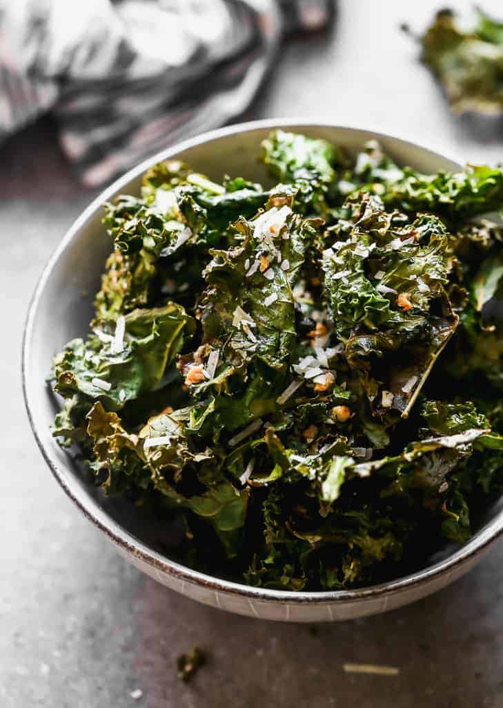

Home
Kale Chips

Description
Hi everyone!
Whether as a starter or as a side, these crispy kale chips will be the perfect addition to your meal!
In this recipe, I am going to show you how to make perfectly baked kale chips. With the addition of some salt, spices and maple syrup, these chips will be so tasty, as well as healthy! You're welcome!
Ingredients
- Black kale (cavolo nero) x 1 (300-350 gr)
- EVO oil x 1 Tbsp
- Salt x 1 tsp
- Maple syrup x 1 Tbsp
- Chilli powder (optional)
- Sesame seeds x 1 Tbsp
- Sesame seed oil x 1 Tbsp
Steps
- Wash the kale, then separate the tender part of the leaves from the hard central stem.
- Coarsely chop the kale. The chopped leaves should be quite big (just like potato crisps).
- In a bowl, add the kale chips, oil, maple syrup, salt and sesame seeds. Add a pinch of chilli powder for an extra kick.
- Mix well, but do not crush the leaves. At
- Put some baking paper on a baking tray, then add the kale chips. Make sure they are evenly spread and on a single layer.
- Bake at 150° (fan oven) for 15 minutes. Then turn the chips and bake for other 10 minutes.
- Put in a bowl and enjoy!